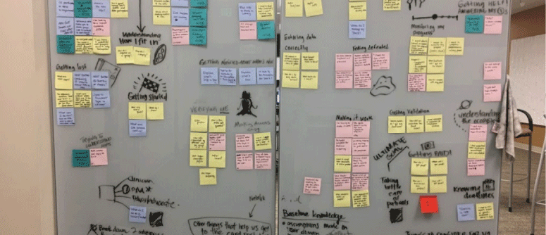

Executive Summary
- The Quality Payment Program (QPP) was signed into a bipartisan law in April 2015 under the Medicare Accessibility and CHIP Reauthorization Act (MACRA).
- QPP Goals: Incentivize value and quality of care over volume and aims to cut down on a lot of the overwhelming administrative burdens these programs have come to put on providers who participate in them.
- Scope and impact:
- Medicare Is the single biggest payer of healthcare in the United States.
- Nearly 55 million Americans rely on health care benefits through Medicare.
- CMS pays over $70 billion to 1.2 million doctors who bill Medicare annually; an average of 580k that each doctor bills to Medicare per year.
Project background:
Congress gave CMS over $300 million to implement QPP. Working with CMS, the U.S. Digital Service team at the Department of Health and Human Services is redesigning and upgrading the technology infrastructure and user experience, to provide patients and clinicians with a better system.
Problem / opportunity:
- Coordinating one design vision. There are 7 design teams, 100s of individuals in the broader team made up of federal employees, agency employees, contractors and subcontractors all tasked with various design, development and product strategy pieces.
- Balancing policy requirements with priority user needs and engineering constraints. “As a CMS representative, I need to make sure it’s sustainable to administer and improve over time the Quality Payment Program to achieve our strategic objectives and legislative mandates.”
- Gathering a clear picture of the user journey through the entire QPP experience.
USDS Design Team
- UX Design Lead: Stephanie Nguyen
- Research Lead: Kayenda Johnson
- Policy Design + Strategy Lead: Benno Schmidt
Other team members: Dozens of incredibly talented designers from QPP contract and subcontract teams who spent hundreds of hours gathering user research, creating wireframes, working with policy and product colleagues to help shape the product into what it is today. The designers and researchers I closely worked with include Ad Hoc (Shawna Hein and Caitlin Weber), Huge (Jess Jung, Theo Robinson and Christian Ramsey), NAVA (Genevieve Gaudet), ThreeSpot (Jamielyn and Chris), Semantic Bits (Ben Traynham and Laren Milburn) and UserWorks (Weimin Hou).
Personas generated by the Huge QPP research and design team:
Goals + Questions:
Product requirements + Business Goals:
Create an experience where a user can learn about QPP, plan for next steps, easily submit measure data, and get feedback on data submission and performance to date.
Key research questions:
- How might we gain a better understanding of the end-to-end process and tasks that a user needs to accomplish to participate in QPP and be rewarded for providing better care?
- What does the QPP end to end flow look like for users?
- What are key pain points?
- Where are points of technical difficulty?
- What are policy and legal requirements?
Research deliverables
- QPP Journey Map: A high level visual framework of the QPP process that balances a user-focused perspective with policy requirements.
Deliverable goals
- A clear vision to prioritize QPP deliverables for year 1 balancing both user needs and policy requirements.
- Highlight the 80% likely, mostly happy path of the defined user persona
- Plot key moments and questions
- Show user pain points
- Point out areas of technical difficulty
- Aggregate and align research insights to actionable next steps
- High level stakeholder agreement on that vision (Policy, Product, Engineering and Design). This means many individual conversations with different teams to explain, highlight questions and points of concern.
- This journey map will show what options clinicians are capable of now and use most commonly. A key limitation: because the program is new, the map uses previous clinician behaviors with similar data submission processes.
Design Process
- Empathize (`research)
- Define (research outcomes)
- Discover (design journey map versions)
- Prototype (design journey map versions)
- Test (validate with users and stakeholders)
We began by mapping out the broad program overview and pulling in background research. We brought together veteran team members and policy experts to try and distill the program needs.
The design team then aggregated previous user research to parallel with site navigation, sorting pain points into categories: understanding how I fit in, verifying me, getting validation, entering data correctly, etc.

While we were trying to get a grasp of the high level end-to-end QPP process, Ad Hoc and UserWorks were using insights to begin design work in parallel. This included site navigation and information architecture. The findings and outcome of the site navigation was a resource to help understand how users prioritize QPP information.
We conducted 23 research sessions to understand processes and 4 group sessions to synthesize and gather consensus.
I went through dozens iterations of a high level journey map with pain points over the course of 2 months. We brought paper journey maps to users and stakeholders. Each iteration allowed the teams to dive into more details and nuances of the QPP process.
We organized a full day "Design-A-Thon" journey map session, bringing all 7 design teams together for the first time to see all of the design pieces in one place. The outcomes and effects include: creating a clearer understanding of the QPP process, setting ongoing priorities for design and development, enhancing project integration between teams, increasing transparency and engaging senior leadership. While the process is far from done, as the program gets bigger, this artifact is a tool to keep different teams in alignment.